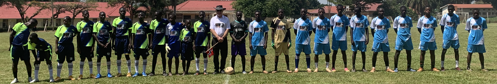

As the CEO & President of Offshore Innovation, Mr. Hans Peter (In the center of the picture) brings over two decades of diplomatic experience to the table. His journey has taken him across multiple continents, including Africa, Asia, and Europe, where he has successfully navigated diverse cultural landscapes and fostered strategic partnerships.
With a deep understanding of international relations and a passion for innovation, Mr. Hans Peter has been instrumental in driving the company's vision forward. His leadership has been pivotal in establishing Offshore Innovation as a key player in the tech consultancy and investment sectors, focusing on sustainable agriculture and fisheries.
Mr. Hans Peter commitment to excellence and his ability to inspire and coordinate the daily activities of the company have been fundamental to its growth and success. His visionary approach continues to guide Offshore Innovation towards new horizons, ensuring a prosperous future for the company and its stakeholders.